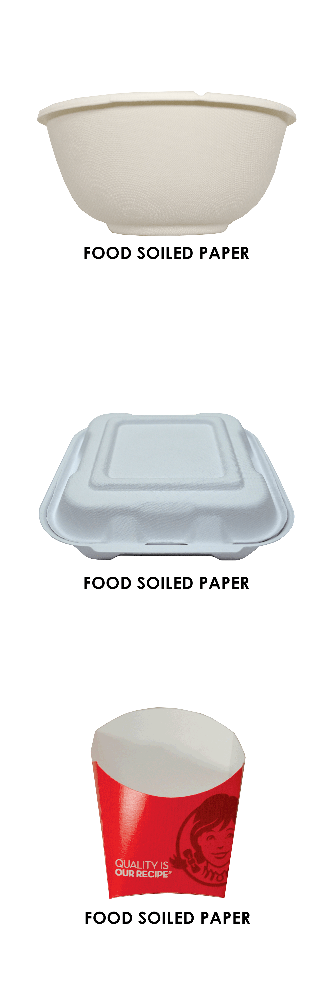
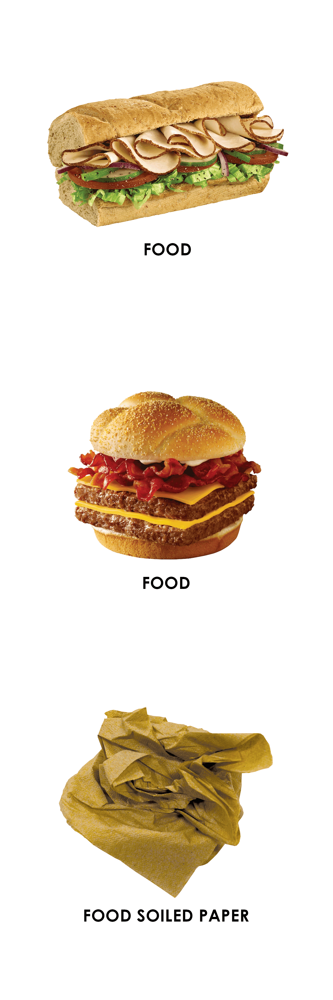
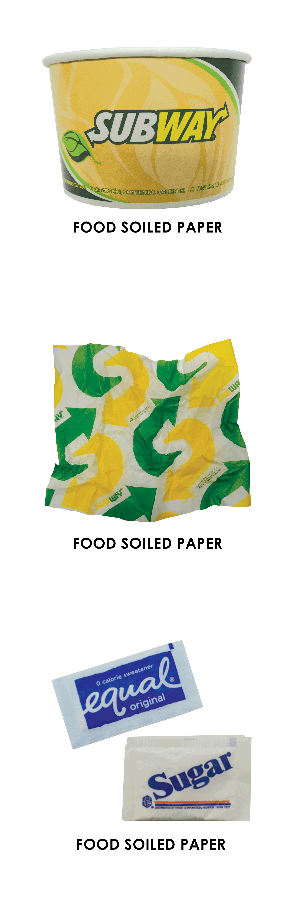

COMPOST
  
0.000 ounces!
You just helped avoid 0.000 ounces
You just composted
of carbon-equivalent emissions!
Food waste is the single largest part of waste. Keeping it out of landfills is important!
 COMPOST
COMPOST